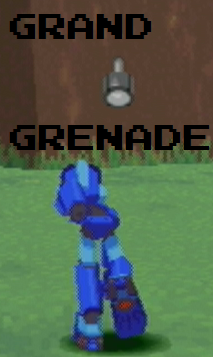

This weapon is made only from a single part: a Bomb Schematic. This item can be found rather easily; it's in the chest in Barrel's room. (What was he doing with it? ) You don't get this weapon too late in the game, which means you can use in a nice number of situations.
Money-wise, the Grand Grenade will leave your pockets quite empty. This is actually the third most expensive weapon in the game, topped only by the Shining Laser and Active Buster. A total amount of 344,000z is nothing to sneeze at, and almost one third of that total comes from the attack upgrade alone. Not to say it's not worth it, which is hardly the case here. You might want to make quite a few trips to the Sub-Cities or Portals to enhance this weapon completely.
The way this weapon is used, you throw it, and a rather nice-sized explosion comes from whatever the Grenade hits. The grenade also produces after-explosions too, which damage any nearby enemies. This is the most powerful thrown weapon in the game. (All 2 of them, 3 if you count the Splash Mine as being thrown, as they all have a hand symbol for their weapon, but I digress.) It also destroys dirt walls in the ruins, which can come in handy.
 Power wise, this weapon can do some pretty nice damage. With the Attack stat upgraded, you can actually knock out the Fokkerwolf in one hit! Of course, hitting it with this weapon may prove to be somewhat of a chore. In general, most reaverbots can't take a direct hit from this thing, and it putts nice dents in a lot of bosses, sans Juno. You'll probably knock out most in one hit, because the initial grenade plus the explosion each count as a separate hit. Granted, the initial hit hurts more than the explosions, but the damage really adds up if you land a direct hit. Looking at the stats of the thing, the attack rivals that of the Shining Laser and Active Buster!
Power wise, this weapon can do some pretty nice damage. With the Attack stat upgraded, you can actually knock out the Fokkerwolf in one hit! Of course, hitting it with this weapon may prove to be somewhat of a chore. In general, most reaverbots can't take a direct hit from this thing, and it putts nice dents in a lot of bosses, sans Juno. You'll probably knock out most in one hit, because the initial grenade plus the explosion each count as a separate hit. Granted, the initial hit hurts more than the explosions, but the damage really adds up if you land a direct hit. Looking at the stats of the thing, the attack rivals that of the Shining Laser and Active Buster!
It's range isn't bad, and honestly, if you want to toss it a bit farther, just use the Free Look option and rear back before tossing it. It's a rather nice way to get some needed range. That's not saying that you shouldn't upgrade it, because that's still recommended. You won't always have time to use Free Look.
The main draw about this weapon, besides the cost, is the Ammo. By default, you have 8 grenades, and for a hefty price of 150,000z, it can upgraded for a max of 32. You might find yourself running out of these often, so watch your ammo! Also, thrown weapons generally have a harder time trying to hit a moving target. You have to really plan ahead with this one.
All in all, the Grand Grenade is a great weapon, set back by the low amount of ammo it has, as well as accuracy issues. I give the Grand Grenade an 8 out of 10. Have a blast!